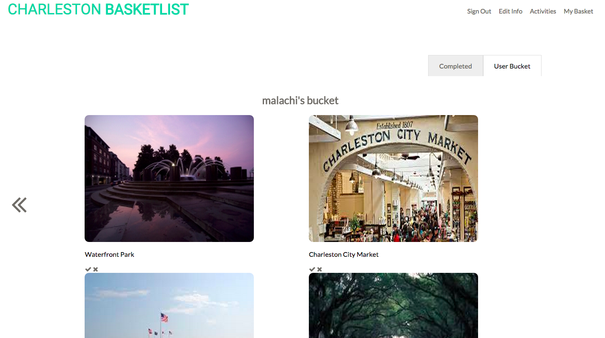
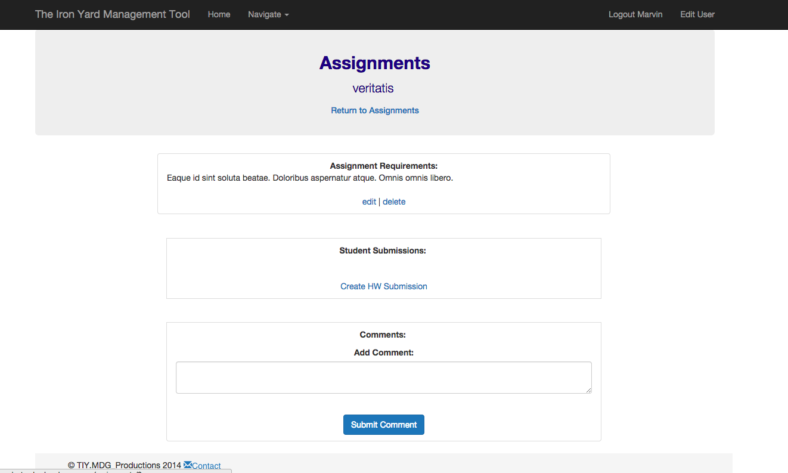
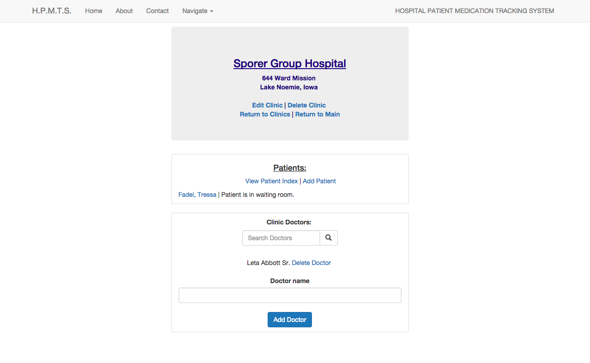

Hello, world!
My name is Malachi Gray. For the first 12 weeks of 2015, I attended an intense immersive web application development bootcamp, learning full stack Ruby on Rails. Browse around to learn more about me and see some of the cool work that I've done. I'm now ready to enter the wild as a coder!
Malachi D. Gray
Full Stack Rails Developer
Charleston, SC
malachi.d.gray@gmail.com
540.413.0116
Click here to view my resume
A few of my projects:
The Charleston Basketlist
Click the image to see the project deployed on Heroku!
The Charleston Basketlist was my final project, culminating 12 weeks of intensive learning at The Iron Yard. A Front End student, Julie, and myself built the project together. I took ownership of the backend, but also delved into working with AngularJS. Contact me for admin access!
Technologies I used:
- Ruby on Rails
- AngularJS
- MySQL (dev/test) / PostgreSQL(prod)
- Devise & Angular Devise
- ngUpload Directive / AWS S3 Bucket
- RSPEC Testing
TIY Homework Tracker
Click the image to see the project deployed on Heroku!
The HW Tracker is a site developed during the mid-point at The Iron Yard. This is a management system built for teachers and students to manage homework assignments and submissions as well as admin to manage multiple locations. Contact me for admin access!
Technologies I used:
- Ruby on Rails
- MySQL (dev/test) / PostgreSQL(prod)
- Devise for user authentication
- jQuery
- jQuery
- CanCanCan for user authorizations
- Bootstrap
Hospital Tracking System
Click the image to see the project deployed on Heroku!
The hospital tracking system is a project that we continually added to during The Iron Yard course. The project is a management system which allows clinics to manage patients and medications. This project is heavily tested with RSPEC. Check it out!
Technologies I used:
- Ruby on Rails
- MySQL (dev/test) / PostgreSQL(prod)
- Devise for user authentication
- jQuery
- CanCanCan for user authorizations
- Bootstrap
About Me
I spent six years as a project analyst for the government. In addition, I'm a single/multi-engine flight instructor (not for the past 2 years). I decided I wanted to change careers to something that I have a passion for and which would allow me to really make a difference. For the first 12 weeks of 2015, I attended The Iron Yard learning Ruby on Rails, JavaScript and a multitude of over web technologies. I truly believe coding is the best field there is and I'm super excited to be a web developer.
In my spare time, I like learning new things, playing/exploring outdoors, playing in the water and spending time with my wife and dog.
Thanks for checking out my portfolio! I am currently looking for a position where I can help make a difference but also continue to learn and grow as web developer. I would love to talk to you! Also, if you are looking for a free lance web developer, I'd love to hear from you as well!
Email me @ malachi.d.gray@gmail.com
Call or text me @ 540.413.0116

In my spare time, I like learning new things, playing/exploring outdoors, playing in the water and spending time with my wife and dog.
Thanks for checking out my portfolio! I am currently looking for a position where I can help make a difference but also continue to learn and grow as web developer. I would love to talk to you! Also, if you are looking for a free lance web developer, I'd love to hear from you as well!
Email me @ malachi.d.gray@gmail.com
Call or text me @ 540.413.0116